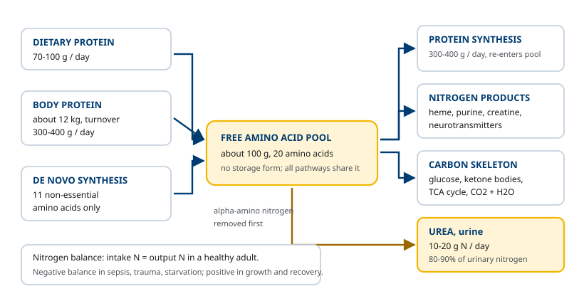
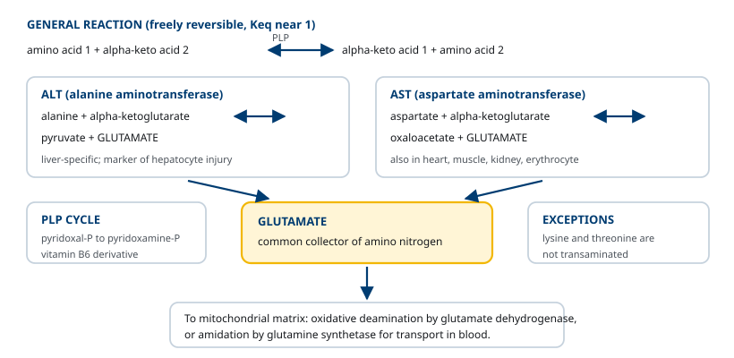
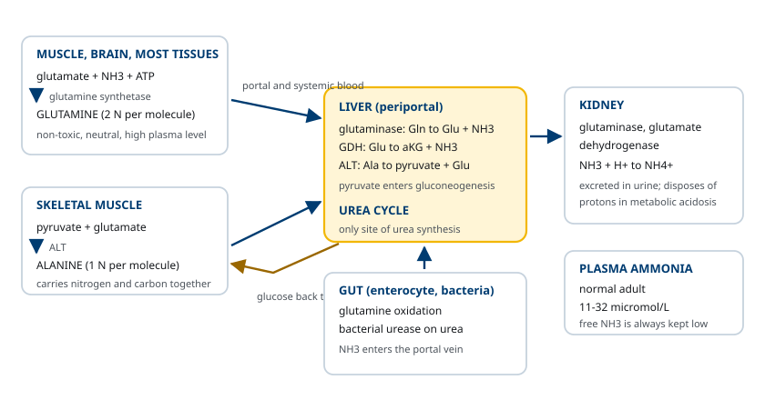
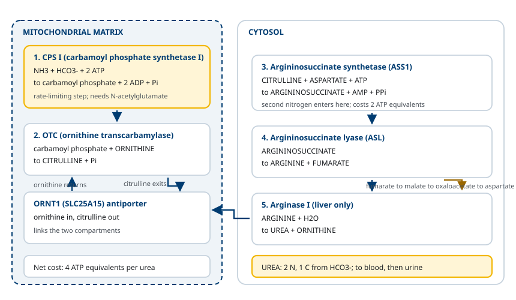
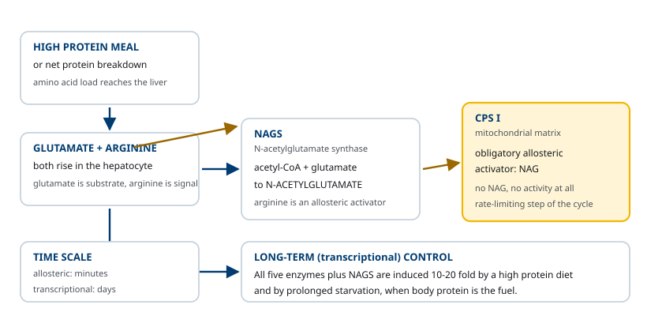
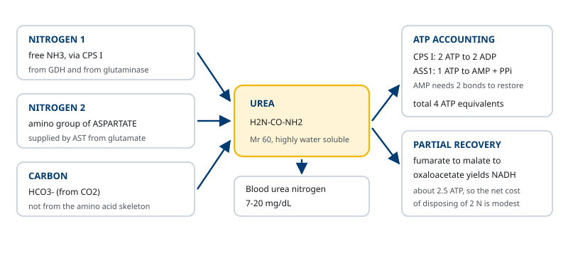

M02-W10-L01 · 대사생화학 · 질소대사
아미노산 질소 처리와 urea cycle
Amino Acid Nitrogen Disposal and the Urea Cycle
학습목표
- 아미노산 pool의 크기와 유입·유출 경로를 열거하고 nitrogen balance의 의미를 설명한다.
- Transamination 반응의 화학과 pyridoxal phosphate의 역할을 설명하고 ALT·AST의 임상적 쓰임을 구분한다.
- Glutamate dehydrogenase의 반응과 알로스테릭 조절을 설명한다.
- Glutamine과 alanine이 조직에서 간으로 질소를 운반하는 두 경로를 비교한다.
- Urea cycle의 다섯 반응을 기질·효소·세포 내 위치와 함께 순서대로 적는다.
- N-acetylglutamate에 의한 CPS I 조절과 urea 합성의 에너지 비용을 계산한다.
선수지식
- M02-W05-L02 TCA cycle — α-ketoglutarate, oxaloacetate, fumarate의 위치
- M02-W04-L03 Gluconeogenesis — pyruvate와 oxaloacetate에서 포도당이 만들어지는 경로
- M01-W03-L01 아미노산의 구조 — α-amino기, 필수·비필수 아미노산의 구분
강의 구성
- 1. 아미노산 pool과 단백질 회전
- 2. Transamination: α-amino기를 glutamate로 모으기
- 3. Oxidative deamination과 glutamate dehydrogenase
- 4. 암모니아의 운반: glutamine 회로와 alanine 회로
- 5. Urea cycle의 다섯 반응
- 6. Urea cycle의 조절
- 7. Urea 합성의 에너지 비용과 다른 경로와의 연결
- 8. 질소 대사 지표의 임상 해석
1. 아미노산 pool과 단백질 회전
몸에는 탄수화물의 glycogen이나 지질의 triacylglycerol에 해당하는 아미노산 저장 형태가 없다. 세포 안팎의 유리 아미노산을 모두 합한 양은 성인에서 약 100 g이며, 이것을 아미노산 pool이라 부른다. 체내 단백질 총량이 약 12 kg인 것에 비하면 1% 미만이다. 이 작은 pool에 들어오고 나가는 흐름이 질소 대사의 출발점이다.
유입은 세 가지다.
- 식이 단백질의 소화 — 성인에서 하루 70~100 g. 위의 pepsin, 췌장의 trypsin·chymotrypsin·elastase·carboxypeptidase, 장 상피의 aminopeptidase가 차례로 작용해 아미노산과 짧은 peptide로 분해된 뒤 흡수된다.
- 체내 단백질의 분해 — 하루 300~400 g. 유입량 중 가장 크다. ubiquitin-proteasome 체계가 ATP를 쓰면서 선택적으로 분해하고, lysosome이 비선택적으로 분해한다.
- 비필수 아미노산의 de novo 합성 — 11가지 비필수 아미노산만 해당한다. 9가지 필수 아미노산(histidine, isoleucine, leucine, lysine, methionine, phenylalanine, threonine, tryptophan, valine)은 탄소 골격을 만들 수 없으므로 반드시 식사로 들어와야 한다.
유출도 세 가지다.
- 단백질 합성 — 하루 300~400 g. 분해량과 거의 같다. 이 둘의 합을 단백질 회전(protein turnover)이라 한다.
- 질소 함유 화합물의 합성 — heme, purine과 pyrimidine, creatine, catecholamine, serotonin, glutathione, nitric oxide가 모두 아미노산에서 나온다.
- 분해 — 이것이 이 수업의 주제다. 아미노산을 분해할 때는 먼저 α-amino기를 떼어내고, 남은 탄소 골격을 따로 처리한다. 질소는 urea로 바꾸어 소변으로 버리고, 탄소는 포도당·ketone체·CO₂로 간다.

Nitrogen balance는 섭취 질소와 배출 질소의 차이다. 건강한 성인은 균형 상태(zero balance)에 있다. 성장기, 임신, 질병 회복기에는 섭취가 많아 양의 균형이고, 기아, 중증 감염, 외상, 수술 후, 조절되지 않는 당뇨병에서는 체단백이 분해되어 음의 균형이 된다. 음의 균형이 지속되면 호흡근과 면역 기능이 먼저 떨어진다.
질소 배출의 형태는 생물마다 다르다. 어류는 암모니아를 그대로 물에 버리고(ammonotelic), 새와 파충류는 uric acid로 버리며(uricotelic), 포유류는 urea로 버린다(ureotelic). 사람의 소변 질소 중 urea가 80~90%를 차지하고, 나머지는 ammonium, creatinine, uric acid다. 하루 urea 질소 배출량은 식이 단백 섭취에 비례해 10~20 g 범위에서 움직인다.
2. Transamination: α-amino기를 glutamate로 모으기
아미노산 분해의 첫 단계는 α-amino기를 α-ketoglutarate로 옮기는 것이다. 이 반응을 transamination(aminotransferase 반응)이라 하며, 결과로 원래 아미노산은 그에 대응하는 α-keto acid가 되고 α-ketoglutarate는 glutamate가 된다.
` 아미노산 + α-ketoglutarate ⇌ α-keto acid + glutamate `
반응의 성질에서 세 가지를 기억한다.
- 자유롭게 가역적이다. 평형상수가 1에 가까워 양방향 모두 진행한다. 따라서 같은 효소가 아미노산 분해에도, 비필수 아미노산 합성에도 쓰인다.
- 아미노기가 유리 암모니아로 풀려나지 않는다. 아미노기는 효소에 결합한 상태로 직접 수용체에 전달된다. 독성이 있는 유리 NH₃를 만들지 않으면서 질소를 모으는 방식이다.
- 거의 모든 아미노산이 참여한다. 예외는 lysine과 threonine으로, 이 둘은 transamination을 거치지 않고 다른 경로로 질소를 떼어낸다.
보조인자는 pyridoxal phosphate(PLP)다. Vitamin B₆(pyridoxine)의 활성형으로, 효소의 lysine 잔기와 Schiff 염기를 이루어 결합해 있다. 반응 중 PLP는 아미노기를 받아 pyridoxamine phosphate가 되고, 그 아미노기를 α-ketoglutarate에 넘기면서 다시 PLP로 돌아간다. 즉 PLP는 아미노기의 중간 운반체다. PLP는 transamination 외에 decarboxylation, deamination, racemization에도 쓰여 아미노산 대사의 거의 모든 분기점에 등장한다.
임상에서 가장 많이 측정되는 두 aminotransferase는 다음과 같다.
| 효소 | 반응 | 분포 | 참고 범위(대략) |
|---|---|---|---|
| ALT(alanine aminotransferase) | alanine + α-ketoglutarate ⇌ pyruvate + glutamate | 간에 거의 집중 | 약 10~40 U/L |
| AST(aspartate aminotransferase) | aspartate + α-ketoglutarate ⇌ oxaloacetate + glutamate | 간, 심근, 골격근, 신장, 적혈구 | 약 10~40 U/L |
두 효소는 모두 세포 안에 있으므로 혈중 농도가 올라간 것은 세포가 깨졌다는 뜻이다. ALT가 간에 더 특이적이므로 간세포 손상의 지표로 쓰이고, AST만 오르면 심근·근육·적혈구 쪽을 먼저 생각한다. AST/ALT 비가 2 이상이면 알코올성 간질환을 시사한다. 이것은 알코올 사용에서 흔한 vitamin B₆ 부족이 PLP를 요구하는 ALT 활성을 더 많이 떨어뜨리고, 미토콘드리아 AST가 함께 유출되기 때문이다. 즉 비율 해석의 근거가 보조인자의 생화학에 있다.

3. Oxidative deamination과 glutamate dehydrogenase
Transamination으로 질소가 glutamate에 모였다. 다음 단계는 glutamate에서 질소를 유리 암모니아로 떼어내는 것이다. 이 반응이 oxidative deamination이고, 효소는 간과 신장 미토콘드리아 기질에 있는 glutamate dehydrogenase(GDH)다.
` glutamate + NAD⁺(또는 NADP⁺) + H₂O ⇌ α-ketoglutarate + NH₃ + NAD(P)H + H⁺ `
GDH에는 다른 탈수소효소에 없는 특징이 있다.
- NAD⁺와 NADP⁺를 모두 쓸 수 있다. 정방향(deamination)에서는 주로 NAD⁺를, 역방향(암모니아 고정)에서는 주로 NADPH를 쓴다.
- 가역적이다. 암모니아 농도가 높고 α-ketoglutarate가 충분하면 역방향으로 작동해 암모니아를 glutamate에 고정한다.
- 알로스테릭 조절을 받는다. GTP가 억제하고 ADP가 활성화한다. GTP는 TCA cycle의 succinyl-CoA synthetase 반응에서 만들어지므로 에너지가 충분하다는 신호이고, ADP는 에너지가 부족하다는 신호다. 즉 에너지가 모자랄 때 아미노산 탄소 골격을 연료로 쓰도록 조절된다.
GDH 반응은 두 방향으로 읽어야 한다. 정방향에서는 urea cycle에 들어갈 암모니아를 공급하고 동시에 α-ketoglutarate를 TCA cycle이나 gluconeogenesis로 보낸다. 역방향에서는 비필수 아미노산 합성의 질소 공급원이 된다.
유리 암모니아를 만드는 경로가 GDH만은 아니다. 다른 공급원도 알아둔다.
- Glutaminase — 간과 신장에서 glutamine의 amide 질소를 떼어 glutamate와 NH₃를 만든다.
- 장내 세균의 urease — 장으로 확산된 urea를 분해해 NH₃를 만들고, 이것이 문맥으로 흡수된다.
- D-amino acid oxidase, L-amino acid oxidase — 간·신장에서 일부 아미노산을 직접 산화한다.
- Amine oxidase — 아민류를 분해할 때 암모니아를 낸다.
- Purine과 pyrimidine의 분해 — 염기의 질소 일부가 암모니아로 나온다.
4. 암모니아의 운반: glutamine 회로와 alanine 회로
암모니아는 거의 모든 조직에서 생기지만 urea로 바꿀 수 있는 곳은 간뿐이다. 그러므로 말초에서 간까지 질소를 옮겨야 하는데, 유리 암모니아를 혈액에 띄워 보낼 수는 없다. 몸은 질소를 아미노산에 실어 운반한다. 경로는 두 가지다.
(1) Glutamine을 통한 운반
대부분의 조직에서 glutamine synthetase가 glutamate의 γ-carboxyl기에 암모니아를 붙여 amide를 만든다. ATP 한 분자를 쓴다.
` glutamate + NH₃ + ATP → glutamine + ADP + Pi `
Glutamine은 전기적으로 중성이고 독성이 없으며 막을 쉽게 통과한다. 혈장에서 농도가 가장 높은 아미노산이고, 한 분자가 질소 두 개(α-amino기와 amide기)를 싣는다. 간에 도착하면 glutaminase가 amide 질소를 NH₃로 떼어내고, 남은 glutamate는 GDH가 처리한다. 신장에서도 같은 효소가 작동하지만 목적이 다르다. 신장에서 만든 NH₃는 세관 내강에서 NH₄⁺가 되어 양성자와 함께 배출되므로, 대사성 산증에서 산을 버리는 경로가 된다. 이때 glutaminase는 산증에 의해 유도된다.
(2) Alanine을 통한 운반 — glucose-alanine 회로
골격근은 질소를 alanine으로 내보낸다. 근육에서 아미노산이 분해되면 질소가 glutamate에 모이고, ALT가 그 질소를 pyruvate에 옮겨 alanine을 만든다. Alanine은 혈액을 타고 간으로 간다. 간의 ALT가 반대 방향으로 작동해 alanine을 다시 pyruvate와 glutamate로 바꾼다.
그 뒤가 이 회로의 요점이다. Pyruvate는 gluconeogenesis로 들어가 포도당이 되어 근육으로 돌아가고, glutamate의 질소는 urea가 되어 버려진다. 즉 한 분자가 질소 처리와 탄소 재활용을 동시에 수행한다. 기아와 심한 운동에서 이 회로의 흐름이 커진다.
| 구분 | Glutamine | Alanine |
|---|---|---|
| 만드는 효소 | Glutamine synthetase(ATP 소비) | ALT(ATP 불필요) |
| 질소 수 | 2 | 1 |
| 주 공급 조직 | 거의 모든 조직, 특히 근육·뇌 | 주로 골격근 |
| 간에서 처리 | Glutaminase → NH₃ | ALT → glutamate + pyruvate |
| 탄소의 운명 | α-ketoglutarate → TCA cycle | pyruvate → gluconeogenesis |
| 추가 기능 | 신장에서 산 배출, 장 상피의 연료 | 포도당을 근육으로 되돌림 |

5. Urea cycle의 다섯 반응
Urea cycle(또는 Krebs-Henseleit cycle)은 1932년에 밝혀진 최초의 대사 회로다. 정식 반응식은 다음과 같다.
` NH₃ + CO₂(HCO₃⁻) + aspartate + 3 ATP → urea + fumarate + 2 ADP + AMP + 4 Pi `
질소 두 개의 출처가 서로 다르다. 하나는 유리 암모니아이고, 다른 하나는 aspartate의 아미노기다. 탄소 하나는 HCO₃⁻에서 온다. 즉 urea의 세 원자가 모두 다른 곳에서 모인다.
회로는 미토콘드리아에서 시작해 세포질에서 끝난다. 다섯 반응을 순서대로 본다.
반응 1. Carbamoyl phosphate synthetase I (CPS I) — 미토콘드리아 기질
NH₃와 HCO₃⁻가 ATP 두 분자를 소비하며 결합해 carbamoyl phosphate가 된다. 비가역이고, 이 회로의 rate-limiting step이다. N-acetylglutamate(NAG)가 알로스테릭 활성자로 반드시 있어야 작동한다.
세포질에는 이름이 비슷한 CPS II가 있는데, 이것은 pyrimidine 합성에 쓰이고 질소원으로 암모니아 대신 glutamine을 쓰며 NAG를 요구하지 않는다. 두 효소를 혼동하지 않는다.
반응 2. Ornithine transcarbamylase (OTC) — 미토콘드리아 기질
Carbamoyl phosphate의 carbamoyl기가 ornithine에 옮겨져 citrulline이 된다. Ornithine은 단백질에 들어가지 않는 아미노산이며, 이 회로에서 운반체 역할을 한다. 생성된 citrulline은 ORNT1(SLC25A15 유전자 산물)이라는 내막 antiporter를 통해 세포질로 나가고, 같은 수송체가 ornithine을 안으로 들인다.
반응 3. Argininosuccinate synthetase (ASS1) — 세포질
Citrulline이 aspartate와 결합해 argininosuccinate가 된다. 두 번째 질소가 들어오는 지점이다. ATP 한 분자를 쓰지만 AMP와 pyrophosphate로 분해되므로 ATP 두 분자에 해당하는 비용이 든다.
반응 4. Argininosuccinate lyase (ASL) — 세포질
Argininosuccinate가 arginine과 fumarate로 갈라진다. Aspartate가 들여온 탄소 골격이 fumarate로 빠져나가는 지점이다.
반응 5. Arginase I — 세포질
Arginine이 가수분해되어 urea와 ornithine이 된다. Ornithine은 미토콘드리아로 돌아가 회로를 다시 돌린다. Arginase I은 간에만 의미 있는 양으로 존재하며, 이것이 urea 합성이 간에 국한되는 생화학적 이유다. 따라서 arginine은 간 외 조직에서는 소비되지 않고 단백질 합성과 nitric oxide 합성에 쓰인다.

회로의 출구에서 생긴 fumarate는 그냥 버려지지 않는다. 세포질의 fumarase가 malate로, malate dehydrogenase가 oxaloacetate로 바꾸고, AST가 glutamate의 질소를 받아 다시 aspartate를 만든다. 이 되돌림을 aspartate-argininosuccinate shunt라 하며, urea cycle과 TCA cycle을 연결한다. 결과적으로 두 번째 질소도 glutamate에서 AST를 거쳐 공급되는 셈이다.
만들어진 urea는 간에서 혈액으로 나와 신장에서 사구체 여과로 배출된다. 혈중 농도를 혈액요소질소(blood urea nitrogen, BUN)로 표현하며 참고 범위는 대략 7~20 mg/dL이다. 여과된 urea의 상당 부분은 세관에서 재흡수되어 신장의 요 농축에 쓰인다. 일부는 장으로 확산되어 세균 urease에 분해되고 암모니아로 다시 흡수된다.
6. Urea cycle의 조절
조절은 작동 시간이 다른 두 층위로 이루어진다.
(1) 단기 — N-acetylglutamate에 의한 CPS I 활성화
CPS I은 NAG가 결합하지 않으면 활성이 사실상 없다. 즉 NAG는 조절자가 아니라 필수 활성자다. NAG는 N-acetylglutamate synthase(NAGS)가 acetyl-CoA와 glutamate로 만들고, arginine이 NAGS를 알로스테릭하게 활성화한다.
이 배선의 의미는 분명하다. 단백질을 많이 먹거나 체단백이 분해되면 간세포의 glutamate(NAG의 기질)와 arginine(NAGS의 활성자)이 함께 올라간다. 두 신호가 모여 NAG가 늘고, CPS I이 켜지고, urea 합성이 빨라진다. 즉 회로는 처리해야 할 질소의 양 자체를 신호로 받는다. Arginine은 회로의 중간체이기도 하므로, 중간체가 쌓이면 회로 전체가 가속되는 전방 활성(feed-forward) 구조다.
(2) 장기 — 효소 유도
고단백 식사와 장기 기아에서 다섯 효소와 NAGS가 모두 10~20배까지 전사 수준에서 유도된다. 기아에서도 유도되는 것이 처음에는 어색해 보이지만, 기아에서는 체단백이 연료가 되므로 처리할 질소가 늘어난다. 두 상황 모두 "아미노산 분해량이 많다"는 공통점을 가진다.
기질 공급도 실질적인 조절이다. CPS I의 Km은 암모니아에 대해 비교적 높아서, 암모니아 농도가 올라가면 반응 속도가 함께 올라간다. GDH와 glutaminase가 공급하는 암모니아의 양이 그대로 회로의 유입량을 정한다.

7. Urea 합성의 에너지 비용과 다른 경로와의 연결
한 분자의 urea를 만드는 데 드는 비용을 세어 본다.
| 반응 | 소비 | ATP 등가 |
|---|---|---|
| CPS I | 2 ATP → 2 ADP + Pi | 2 |
| ASS1 | 1 ATP → AMP + PPi | 2 |
| 합계 | 4 |
ASS1 반응을 2로 세는 이유는 AMP를 ATP로 되돌리려면 인산결합 두 개가 필요하기 때문이다. 게다가 생성된 pyrophosphate가 가수분해되면서 반응이 비가역 쪽으로 밀린다.
그러나 실제 순비용은 4보다 작다. 반응 4에서 나온 fumarate가 malate를 거쳐 oxaloacetate가 될 때 NADH 한 분자가 생기고, 이것이 산화되면 약 2.5 ATP에 해당한다. 또한 암모니아를 공급한 GDH 반응에서도 NADH가 하나 나온다. 질소 두 개를 안전하게 버리는 대가로 이 정도의 비용을 치르는 것이다.
다른 경로와의 연결이 세 지점에서 일어난다.
- TCA cycle — fumarate가 들어가고 α-ketoglutarate가 나온다. 두 회로는 aspartate-argininosuccinate shunt로 묶여 있다.
- Gluconeogenesis — alanine이 실어 온 pyruvate와, fumarate에서 유도된 oxaloacetate가 모두 포도당 합성의 기질이 된다. 기아에서 아미노산 분해가 늘면 질소 처리와 포도당 생산이 동시에 증가한다.
- Nitric oxide 합성 — arginine은 urea cycle의 중간체이면서 nitric oxide synthase의 기질이다. Citrulline과 arginine은 혈관 내피에서 따로 순환하므로, urea cycle 효소의 일부 결손은 nitric oxide 생성에도 영향을 준다.
회로의 위치도 생리와 맞물려 있다. 간은 균일하지 않다. 문맥 쪽(periportal) 간세포는 urea cycle 효소가 많아 들어오는 암모니아를 대량으로 처리하고, 중심정맥 쪽(perivenous) 간세포는 glutamine synthetase가 많아 앞에서 놓친 암모니아를 glutamine으로 붙잡는다. 고용량 저친화도 처리 뒤에 저용량 고친화도 포획이 배치되어 간을 지나는 혈액의 암모니아가 거의 남지 않는다.
8. 질소 대사 지표의 임상 해석
이 수업의 분자들은 거의 모두 임상 검사 항목이다. 해석의 근거를 경로와 연결해 둔다.
(1) 혈중 암모니아 정상 성인 11~32 μmol/L. 채혈 후 적혈구에서 암모니아가 계속 생기므로 얼음에 담아 즉시 처리해야 하고, 지혈대를 오래 묶거나 주먹을 쥐게 하면 근육에서 방출되어 높게 나온다. 전처리 오류로 인한 가짜 상승이 흔하다.
(2) BUN 7~20 mg/dL. urea 합성량과 신장 배출량의 균형이다. 따라서 올라가는 원인이 양쪽에 있다.
- 배출 감소 — 신기능 저하, 탈수로 인한 전신성(prerenal) 상태
- 합성 증가 — 고단백 섭취, 상부 위장관 출혈(장에서 혈액 단백이 분해), corticosteroid, 체단백 분해 증가
- 낮은 BUN — 간에서 urea를 만들지 못하는 중증 간기능 저하, 저단백 섭취, 임신(혈액량 증가)
BUN만으로 신기능을 판단하지 않고 creatinine과 함께 본다. BUN/creatinine 비가 20을 넘으면 전신성 요인이나 위장관 출혈을 먼저 고려한다.
(3) ALT와 AST 앞 절에서 다룬 대로 세포 손상의 지표다. 상승 폭도 정보를 준다. 급성 바이러스 간염이나 허혈성 손상에서는 정상 상한의 수십 배까지 오르고, 비알코올 지방간질환에서는 2~3배 정도에 머문다.
(4) 요 질소 배출 중환자의 영양 상태 평가에 쓰인다. 24시간 요 urea 질소를 측정해 섭취 질소와 비교하면 nitrogen balance를 추정할 수 있다. 음의 균형이 크면 단백 공급을 늘려야 한다.

확인 문항
Transamination 반응이 아미노산 분해와 비필수 아미노산 합성에 모두 쓰일 수 있는 이유를 반응의 열역학으로 설명하라.
해설
Transamination의 평형상수가 1에 가까워 자유롭게 가역적이기 때문이다. 아미노기가 아미노산에서 α-ketoglutarate로 옮겨지는 반응과 glutamate에서 α-keto acid로 옮겨지는 반응의 자유에너지 변화가 거의 0이므로, 방향은 기질과 생성물의 농도비로만 정해진다. 아미노산이 과잉이면 분해 방향으로, 특정 α-keto acid가 쌓이고 질소가 충분하면 합성 방향으로 흐른다. 비가역 단계가 없으므로 이 지점은 조절점이 되지 못하고, 조절은 GDH와 CPS I 같은 비가역 단계에 놓인다.
혈중 AST는 높지만 ALT는 거의 정상인 환자에서 간 외 원인을 먼저 고려해야 하는 이유는 무엇인가.
해설
두 효소의 조직 분포가 다르기 때문이다. ALT는 간세포에 거의 집중되어 있지만 AST는 심근, 골격근, 신장, 적혈구에도 상당량 존재한다. 따라서 AST만 오른 상승은 간세포 손상보다 심근 손상, 횡문근 손상, 용혈, 또는 채혈 과정의 적혈구 파괴를 먼저 시사한다. 반대로 간세포가 손상되면 ALT가 더 특이적으로 올라간다. 예외는 알코올성 간질환으로, vitamin B6 부족으로 PLP가 모자라 ALT 활성이 상대적으로 낮아지고 미토콘드리아 AST가 함께 유출되어 AST/ALT 비가 2 이상이 된다.
근육이 질소를 glutamine이 아니라 alanine으로도 내보내는 것은 어떤 이점이 있는가.
해설
Alanine은 질소와 탄소를 함께 운반하기 때문이다. 근육에서 glycolysis로 생긴 pyruvate에 ALT가 질소를 옮겨 alanine을 만들고, 간에서 다시 분해하면 질소는 urea로 가고 pyruvate는 gluconeogenesis의 기질이 된다. 생성된 포도당이 근육으로 돌아오므로 근육은 질소를 버리면서 탄소를 잃지 않는다. 또한 alanine 생성에는 ATP가 들지 않는데, glutamine synthetase 반응은 ATP 한 분자를 소비한다. 기아와 심한 운동에서 이 회로의 흐름이 커지는 이유가 여기에 있다.
CPS I과 CPS II를 구분하는 기준 세 가지를 들고, 각각이 어느 경로에 속하는지 설명하라.
해설
첫째 세포 내 위치로, CPS I은 미토콘드리아 기질에 있고 CPS II는 세포질에 있다. 둘째 질소원으로, CPS I은 유리 암모니아를 쓰고 CPS II는 glutamine의 amide 질소를 쓴다. 셋째 조절로, CPS I은 N-acetylglutamate가 결합하지 않으면 활성이 없는 반면 CPS II는 NAG를 요구하지 않고 ATP와 UTP로 조절된다. CPS I은 urea cycle의 첫 반응이고 CPS II는 pyrimidine de novo 합성의 첫 반응이다. 따라서 urea cycle 결손에서 carbamoyl phosphate가 세포질로 넘치면 CPS II 하류로 흘러 요 orotic acid가 늘어난다.
고단백 식사와 장기 기아는 겉보기에 반대 상황인데도 urea cycle 효소가 모두 유도된다. 그 공통점은 무엇인가.
해설
두 경우 모두 간이 처리해야 할 아미노산의 양이 늘어난다는 점이 공통이다. 고단백 식사에서는 식이 단백에서 들어온 아미노산이 단백질 합성에 필요한 양을 넘어 분해되고, 장기 기아에서는 체단백이 분해되어 포도당 생성의 기질로 쓰이면서 질소가 풀려난다. 두 경우 모두 처리할 질소가 많으므로 다섯 효소와 NAGS의 전사가 10~20배까지 유도된다. 반대로 저단백 식사에서는 이 효소들의 발현이 줄어들며, 그래서 오랫동안 단백을 제한한 환자에게 갑자기 단백을 많이 공급하면 처리 능력을 넘겨 암모니아가 올라갈 수 있다.
Urea 한 분자를 만드는 데 ATP 등가 4개가 들지만 실제 순비용은 이보다 작다. 어디서 회수되는가.
해설
회로 밖에서 환원당량이 생기기 때문이다. 반응 4에서 생성된 fumarate가 fumarase와 malate dehydrogenase를 거쳐 oxaloacetate가 될 때 NADH 한 분자가 만들어지고, 산화적 인산화를 통해 약 2.5 ATP에 해당하는 에너지를 낸다. 또한 암모니아를 공급한 glutamate dehydrogenase 반응에서도 NADH가 하나 생긴다. 따라서 명목상 4 ATP 등가를 쓰지만 환원당량 회수를 고려하면 순비용은 상당히 줄어든다.
고암모니아혈증 환자가 과호흡으로 호흡성 알칼리증에 빠지면 신경 증상이 악화된다. 생화학적으로 설명하라.
해설
암모니아의 pKa가 약 9.2이기 때문이다. 생리적 pH에서는 99% 이상이 이온형 NH4+로 존재하고, 막을 수동확산으로 통과하는 것은 비이온형 NH3다. pH가 올라가면 Henderson-Hasselbalch 관계에 따라 NH3 비율이 커지므로 혈액-뇌 장벽을 통과해 뇌로 들어가는 암모니아가 늘어난다. 뇌에서 암모니아는 glutamine synthetase에 의해 glutamine으로 전환되어 축적되고, 삼투압 상승과 astrocyte 부종을 일으킨다. 따라서 알칼리증은 같은 혈중 농도에서도 신경독성을 키운다. 치료에서 과호흡과 알칼리증 교정이 함께 고려되는 근거다.
참고문헌
- Ferrier DR (ed). Lippincott Illustrated Reviews: Biochemistry. Chapter 19, Removal of Nitrogen from Amino Acids.
- Krebs HA, Henseleit K. Untersuchungen über die Harnstoffbildung im Tierkörper. Klinische Wochenschrift 1932;11:757–759.
- Morris SM Jr. Regulation of enzymes of the urea cycle and arginine metabolism. Annu Rev Nutr 2002;22:87–105.
- Häberle J et al. Suggested guidelines for the diagnosis and management of urea cycle disorders: first revision. Orphanet J Rare Dis 2019;14:32.
- Haüssinger D. Nitrogen metabolism in liver: structural and functional organization and physiological relevance. Biochem J 1990;267:281–290.
- Kwan L, Bartter F, Pfeiffer EF. Metabolic acidosis and renal ammoniagenesis. Am J Physiol 1981;240:F257–F265.
- Walker V. Ammonia metabolism and hyperammonemic disorders. Adv Clin Chem 2014;67:73–150.